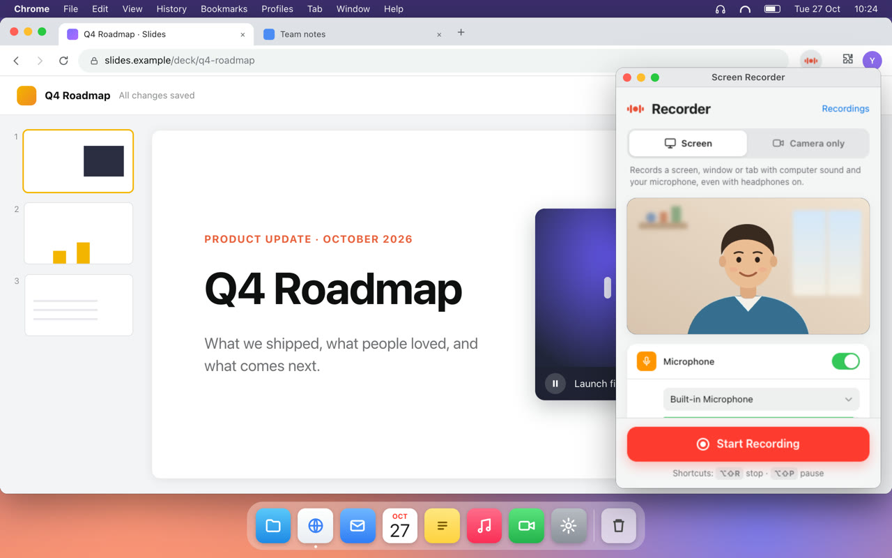
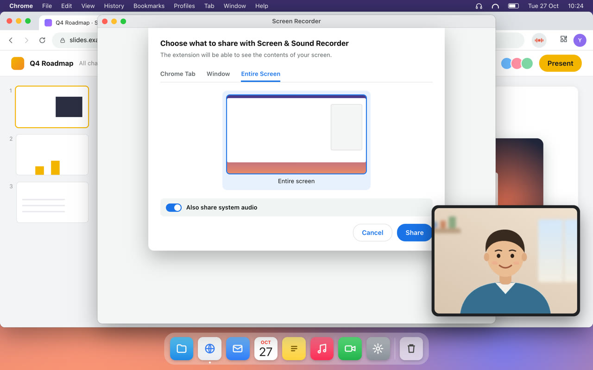
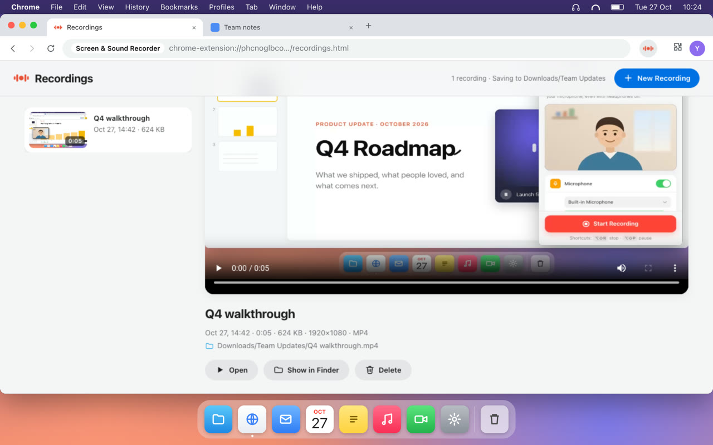

Free Chrome extension for Mac
Record your screen with your computer's sound. Even with headphones on.
Screen & Sound Recorder captures your screen, the sound your Mac plays and your microphone, and saves one ready-to-share MP4. Everything stays on your Mac.
Works on macOS 14.2 or later with Chrome 141 or later.
Also on YouTube.
The problem with headphones
Built-in recorders like QuickTime Player only listen through a microphone. Without headphones, your Mac's sound leaks into the mic: faint, echoey, but there. Put headphones on, and the other people in the call, the video you're explaining and every app sound go straight to your ears. The recording only has your voice.
Screen & Sound Recorder takes the computer's sound directly from macOS and mixes it with your microphone, so both end up in the file, headphones on or off.
Three steps

Open it from the toolbar
Turn your microphone and camera on or off, pick a quality, and name a save folder once.

Share your screen with its sound
Choose Entire Screen, a window or a tab, and turn on "Also share system audio".

Stop, and it's saved
Your MP4 lands in your folder in Downloads, and the Recordings page opens so you can watch it right away.
Everything you need, nothing you don't
Computer sound and your voice
Mixed into one track, with a limiter so loud moments don't clip.
Floating camera
Drag your camera bubble anywhere. It's in the video when you share the entire screen.
Camera only
Record just your camera and mic, or just your voice as an M4A file.
Controls in the toolbar
A 3-second countdown, the running time, and pause, resume and mute in one click. Keyboard shortcuts too.
Straight into a folder
MP4 files go into a folder you name inside Downloads, with no save dialogs.
Your recordings in one place
Watch, rename, open in QuickTime or show in Finder. Renaming and deleting change the file too.
It all stays on your Mac
There are no servers, no account, no analytics and no ads. Your screen, your sound and your camera are recorded on your computer and saved to your own Downloads folder. Nothing is ever uploaded.
Read the privacy policyQuestions
How do I record my Mac screen with computer sound while wearing headphones?
Install Screen & Sound Recorder, click its toolbar icon and press Start Recording. In Chrome's picker, choose Entire Screen and turn on "Also share system audio". The computer's sound is captured directly and mixed with your microphone, so it's recorded even when it only plays in your headphones.
Why doesn't QuickTime record the sound I hear in my headphones?
QuickTime Player, and the Screenshot toolbar before macOS 27, record sound only through a microphone. With headphones on, the computer's sound never reaches the microphone. macOS 27 adds an "Include System Audio" option to the Screenshot toolbar. Screen & Sound Recorder works on macOS 14.2 and later, mixes your microphone into the same file, and adds a floating camera window.
Are my recordings uploaded anywhere?
No. Recordings are saved as files in a folder you choose inside Downloads. Nothing you record is sent anywhere.
What file format does it save?
MP4 with H.264 video and AAC audio, which plays in QuickTime and almost everywhere else. Microphone-only recordings are saved as M4A.
What do I need to use it?
A Mac with macOS 14.2 or later and Google Chrome 141 or later. The first time, turn on Google Chrome in System Settings → Privacy & Security → Screen & System Audio Recording, and allow the microphone and camera if you use them.
Why is the sound recorded twice?
With the microphone on and sound playing through your speakers, the mic hears the speakers too. Headphones give the cleanest result.
Is it free?
Yes, it's free on the Chrome Web Store.